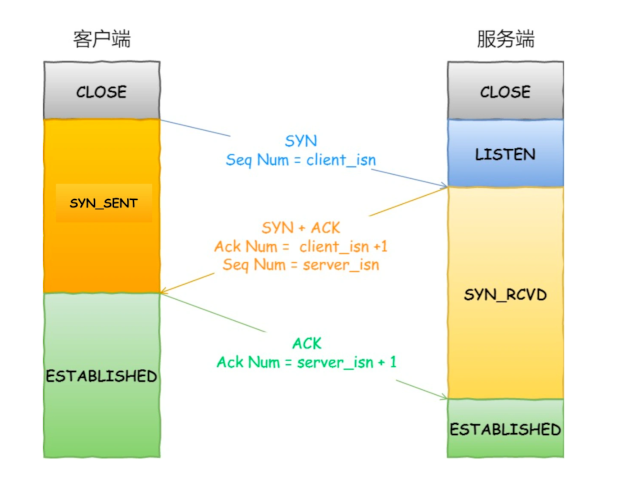

Ch03-TCP 之 三次握手
August 3, 2021
1. 基本原理 #

2. 为什么是三次握手 #
用于保证可靠性和流量控制维护的某些状态信息，这些信息的组合（包括 Socket、序列号和窗口大小）称为连接。
-
三次握手才可以阻止重复历史连接的初始化（主要原因）
在 client 第二次与 server 握手开始之前，会判断 isn 是否符合预期；如果符合预期，那么会向 server 发送 ack 建立连接；如果不符合预期，那么向 server 发送 rst 终止连接。
-
三次握手才可以同步双方的初始序列号
在 client 第一次与 server 握手的时候，会将 client_isn 同步给 server；在 server 第一次回复 client 的时候，会将 server_isn 同步给 client。
-
三次握手才可以避免资源浪费
不使用「两次握手」和「四次握手」的原因：
- 两次握手：无法防止历史连接的建立，会造成双方资源的浪费，也无法可靠的同步双方序列号；
- 四次握手：三次握手就已经理论上最少可靠连接建立，所以不需要使用更多的通信次数。